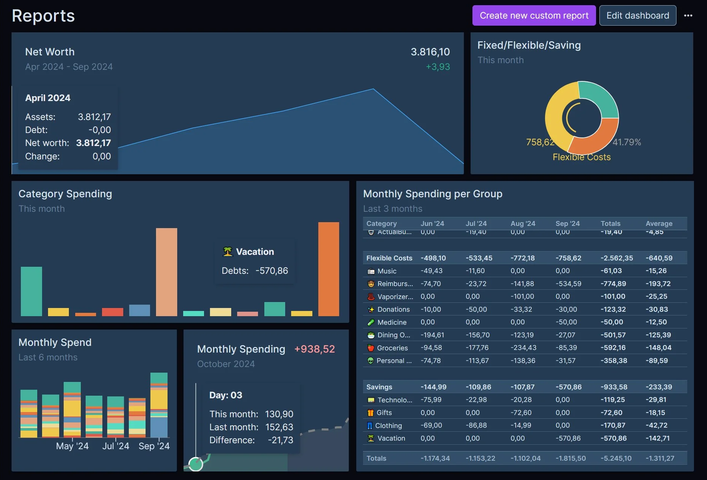

Finance App : Agrégateur Financier
Conception et déploiement d'une architecture 3-tiers pour agréger et analyser toutes mes données financières personnelles. Combine le budgeting d'Actual, des imports automatiques (API & CSV) et la puissance analytique de Metabase.

🎯 Objectif du Projet
L'objectif était d'obtenir une vision consolidée de mes finances, réparties sur de multiples comptes traditionnels (LCL, BoursoBank) et plateformes modernes (Binance, Revolut, Trade Republic, Wise). La solution devait être sécurisée (données locales via Docker), automatisée au maximum, et fournir des dashboards interactifs puissants sans compromettre l'intégrité de la base transactionnelle.
🏗️ Architecture 3-Tiers
UI Budget & SQLite Live
Agrégation CCXT & Parsers CSV
Dashboards Analytiques BI
Une architecture conteneurisée robuste protégeant la base en production via un snapshot SQLite pour l'analytique.
📦 Stratégie d'Agrégation Hybride
Intégration via Enable Banking PSD2 directement dans l'interface d'Actual Budget. Aucune ligne de code requise, synchronisation robuste et native.
Le worker Python intègre la librairie CCXT pour se connecter en mode read-only à l'API Binance et synchroniser automatiquement les soldes et transactions.
Pour les institutions sans API ouverte, le worker écoute le répertoire local ./imports/<source>/. Lorsqu'un export CSV est déposé, il est parsé et injecté automatiquement.

🛡️ Sécurité & Infrastructure (DevSecOps)
Élimination totale des fichiers .env contenant des données en clair sur le serveur. Utilisation d'un Secret Manager centralisé qui injecte les variables (clés API, accès DB) directement dans la RAM des conteneurs via un jeton révocable.
Administration du serveur sécurisée par une architecture réseau Zero Trust (VPN Mesh). Durcissement de l'OS avec fermeture des ports standards, règles de pare-feu strictes et authentification par clés cryptographiques (Ed25519).
💡 Défis Techniques & Bonnes Pratiques
- ✓ Intégrité de la Base (Isolation) : L'outil BI (Metabase) ne lit pas la base de production pour éviter les "database locks". Un processus génère un snapshot cohérent à chaque cycle d'agrégation.
- ✓ Réseau Bridge Interne : Les conteneurs Docker communiquent via un réseau privé
finance-neten résolution DNS par nom de conteneur, minimisant les ports exposés sur la machine hôte. - ✓ Evolutivité : Des placeholders structurés sont déjà en place pour intégrer facilement de nouvelles sources de données à l'avenir.